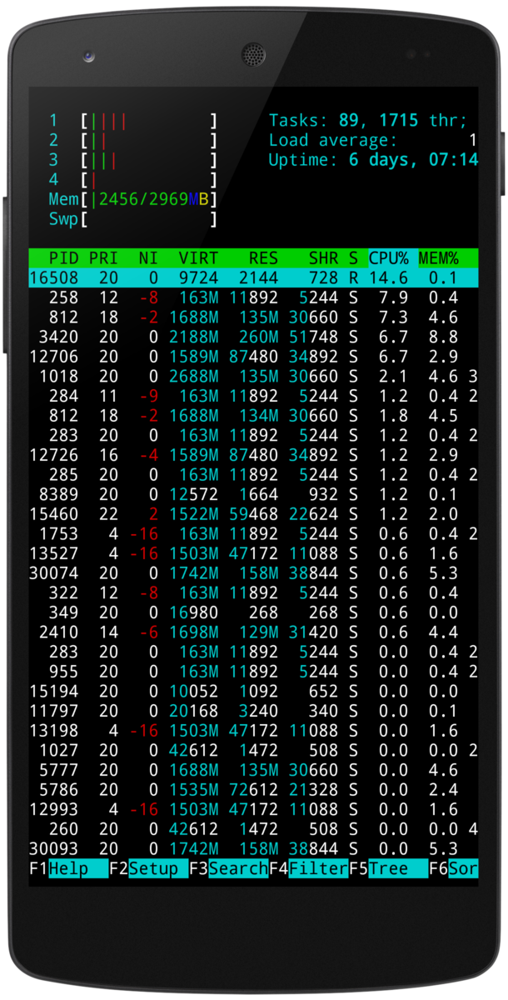

- Nano
- Nmap
- Metasploit Framework
- OpenSSH
- СМС БОМБЕР
Termux - это android приложения , которое представляет из себя эмулятор терминала с chroot средой Linux , которое напрямую работает без рут доступа телефона так и с рут доступом по требованию.
>Прочитайте Вики, чтобы узнать больше

Файловые команды.
ls – список файлов и каталогов
cd dir – сменить директорию на dir
mkdir dir – создать каталог dir
cd – сменить на домашний каталог
pwd – показать текущий каталог
mkdir dir – создать каталог dir
rm file – удалить file
rm -r dir – удалить каталог dir
rm -f file – удалить форсированно file
rm -rf dir – удалить форсированно каталог dir
cp file1 file2 – скопировать file1 в file2
cp -r dir1 dir2 – скопировать dir1 в dir2; создаст каталог dir2, если он не существует
mv file1 file2 – переименовать или переместить file1 в file2. если file2 существующий каталог — переместить file1 в каталог file2
ln -s file link – создать символическую ссылку link к файлу file
touch file – создать file
cat > file – направить стандартный ввод в file
more file – вывести содержимое file
head file – вывести первые 10 строк file
tail file – вывести последние 10 строк file
Инструменты
1 Nmap
Nmap ("Network Mapper") — это утилита с открытым исходным кодом для исследования сети и проверки безопасности. Многие системные администраторы и администраторы сетей также находят её полезной для таких задач как инвентаризация сети, управления расписанием служб обновлений и мониторинга аптайма хостов или служб. Nmap использует сырые IP пакеты новаторским способом, чтобы определить, какие хосты доступны в сети, какие службы (имя и версия приложений) эти хосты предлагают, какие операционные системы (и версии ОС) там запущены, какие типы фильтров пакетов/файерволов используются и дюжины других характеристик. Она была создана для быстрого сканирования больших сетей, но работает и прекрасно работает в отношении единичных хостов. Nmap запускается на всех популярных операционных системах, а официальные исполнимые пакеты доступны для Linux, Windows и Mac OS X. В дополнении к классической версии Nmap комоандной строки, набор Nmap включает продвинутый графический интерфейс и просмотрщик результатов (Zenmap), гибкий инструмент передачи, перенаправления и отладки данных (Ncat), утилиту для сравнения результатов сканирования (Ndiff), и инструмент генерации пакетов и анализа ответов (Nping). Он был даже показан в двенадцати фильмах, включая Матрицу Перезагрузка, Die Hard 4, Girl With the Dragon Tattoo и Ультиматум борна.
2 Metasploit
Metasploit Project — проект, посвящённый информационной безопасности. Создан для предоставления информации об уязвимостях, помощи в создании сигнатур для IDS, создания и тестирования эксплойтов. Наиболее известен проект Metasploit Framework — удобная платформа для создания и отладки эксплойтов. Кроме того, проект включает в себя базу опкодов, архив шеллкодов и информацию по исследованиям информационной безопасности.
Metasploit был создан в июле 2003 года. Версия 1.0 была написана на языке Perl и содержала псевдографический интерфейс на базе curses. Автором выступал HD Moore. При работе над второй (2.x) версией к HD Moore присоединился Мэтт Миллер и несколько добровольцев. Третья версия была полностью переписана на Ruby, её разрабатывала компания Metasploit LLC (основанная разработчиками в 2006 году). В 2008 году лицензия Metasploit Framework была сменена с проприетарной на BSD. В 2009 фирма Rapid7, занимающаяся управлением уязвимостями, объявила о приобретении Metasploit, популярного открытого программного пакета двойного назначения для проведения тестов на проникновение. Некоммерческая версия утилиты по-прежнему будет доступна для всех желающих.
Как и коммерческие аналоги, бесплатная версия Metasploit может быть использована как системными администраторами и специалистами по безопасности для защиты компьютерных систем, так и хакерами-взломщиками или скрипткиддиc для получения несанкционированного доступа к удаленным системам.
3 Nano
Nano — консольный текстовый редактор для UNIX и Unix-подобных операционных систем, основанный на библиотеке curses и распространяемый под лицензией GNU GPL. Это свободный клон текстового редактора Pico, входившего в состав e-mail клиента Pine. nano был создан, чтобы повторить функциональность и удобство интерфейса Pico, но без глубокой интеграции в почтовый клиент, присущей пакету Pine/Pico
4 OpenSSH
OpenSSH (англ. Open Secure Shell — открытая безопасная оболочка) — набор программ, предоставляющих шифрование сеансов связи по компьютерным сетям с использованием протокола SSH. Он был создан под руководством Тео де Раадта как открытая альтернатива проприетарного ПО от SSH Communications Security.